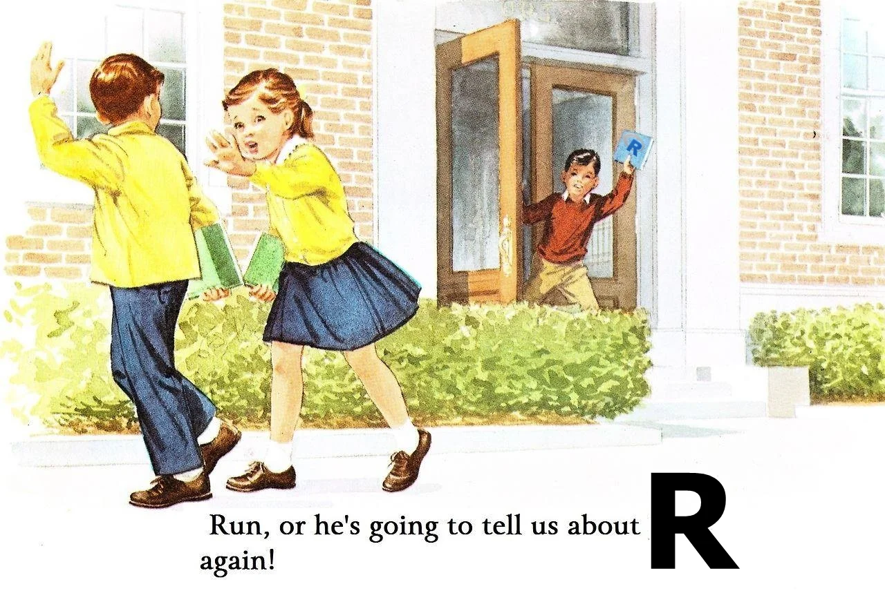
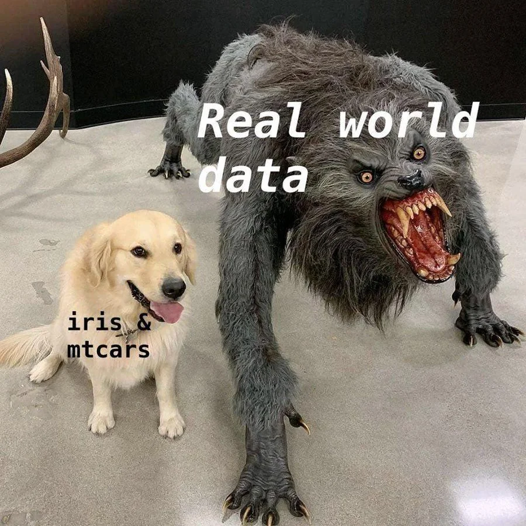

vec_1 <- c("yes", "no", "yes")
fct_1 <- factor(c("yes", "no", "yes"))
# Notice the difference in outputs
vec_1[1] "yes" "no" "yes"fct_1[1] yes no yes
Levels: no yes
Calculus I: Derivatives
Links
Factors
Understanding Dataframes
Loading Packages
Importing and Exporting different types of Dataframes
Factors are used for categorical data - both nominal and ordinal ones.
Factors are treated as a separate datatype in R. Technically, factors are stored as a vector of integer values corresponding to the character type objects which they are used to represent.
In R, dataframes are data structure which store data in a tabular format.
Packages in R are containers for functions. A lot of packages are already installed when you install R.
# Check available packages
library()You can install packages from Comprehensive R Archive Network or CRAN which is an online storage of peer-reviewed and documented packages.
The command for loading a package is install.package().
# installing package. Eg, tidyverse
install.packages("tidyverse") # You have ti run this once on system
library(tidyverse) # Once installed library(<packagename>) command loads all the functions associated with the package in the current session for use
R has a range of functions for using different types of data. But before loading datasets let’s understand the concept of working directories.
A working directory is sort of the “office” that you operate from. They tell R where to operate from.
Working directories are specified using a file path i.e. the address in your computer where your script will be stored, or where your dataset is kept.
# Commands:
getwd() # Gets the present directory or pathway where you are operating from
setwd("<press tab here>") # Setting new directory as working directory
list.files() #list the files in the working directoryBelow is a limited list of commands for loading/importing most commonly used dataset types.
read.csv("FileName") # reads CSV files / press tab inside the quotes
read_csv("Pathname/filename.csv")
# The part before :: in the following code refers to the package from where the
# function comes from. You will need to load those packages first.
readxl::read_excel() # read excel files
readxl::read_xlsx() # reads excel workbooks
haven::read_dta() # reads stata dta files
# example:
dataframe1 <- read.csv("<file path>")Download the folder Datasets-mathcamp from the link
Load datasets using the functions referred above
Explore the contents of datasets using the functions we learned in the previous section.
Save these datasets with a different names at a different location.
Download the folder Datasets-mathcamp from the link
Load datasets using the functions referred above.
ANES dataset | American National Election Study (“2016 Time Series Study,” n.d.)
anes_df <- read.csv("Datasets-mathcamp/anes_specialstudy_2020-2022_socialmedia_csv_20230705/anes_specialstudy_2020-2022_socialmedia_csv_20230705.csv") # base R
anes_df_2 <- read_csv("Datasets-mathcamp/anes_specialstudy_2020-2022_socialmedia_csv_20230705/anes_specialstudy_2020-2022_socialmedia_csv_20230705.csv") # tidyverseWorld Political Cleavages and Inequality Database
wid_df <- readxl::read_excel("Datasets-mathcamp/World Inequality Database/gmp-macro-final-party.xlsx")Database on Political Institutions
dpi20_df <- read_dta("Datasets-mathcamp/DPI/DPI2020_stata13.dta") # Why error?
dpi20_df_2 <- read.dta13("Datasets-mathcamp/DPI/DPI2020_stata13.dta")VDem dataset | Varieties of democracy
vdem_df <- readRDS("Datasets-mathcamp/V-Dem-CY-Full+Others-v12.rds")
# RDS and Rdata are native R file storage formats#Hint: summary, str# Hint
# write.csv() and equivalents
# saveRDS and save for native R data struture typesThe datasets we just practiced with are very commonly used across various subfields. The documentation is also included in the folder that we just downloaded.